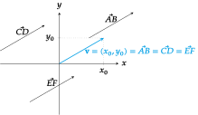
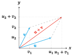
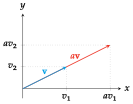
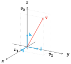
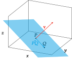

Analytic Geometry Scalars and Vectors Scalars Some phenomena of Nature can be described by a number and a unit of measurement. Definition - Scalar. A scalar is a number that expresses a magnitude without direction. Example. The height or weight of a person, the temperature of a gas or the time it takes a vehicle to travel a distance. However, there are other phenomena that cannot be described adequately by a scalar. If, for instance, a sailor wants to head for seaport and only knows the intensity of wind, he will not know what direction to take. The description of wind requires two elements: intensity and direction. Vectors Definition - Vector. A vector is a number that expresses a magnitude and has associated an orientation and a sense. Example. The velocity of a vehicle or the force applied to an object. Geometrically, a vector is represented by an directed line segment, that is, an arrow. Vector representation An oriented segment can be located in different places in a Cartesian space. However, regardless of where it is located, if the length and the direction of the segment does not change, the segment represents always the same vector. This allows to represent all vectors with the same origin, the origin of the Cartesian coordinate system. Thus, a vector can be represented by the Cartesian coordinates of its final end in any Euclidean space.  Vector from two points Given two points $P$ and $Q$ of a Cartesian space, the vector that starts at $P$ and ends at $Q$ has coordinates $\vec{PQ}=Q-P$. Example. Given the points $P=(1,1)$ and $Q=(3,4)$ in the real plane $\mathbb{R}^2$, the coordinates of the vector that start at $P$ and ends at $Q$ are $$\vec{PQ} = Q-P = (3,4)-(1,1) = (3-2,4-1) = (2,3).$$ Module of a vector Definition - Module of a vector. Given a vector $\mathbf{v}=(v_1,\cdots,v_n)$ in $\mathbb{R}^n$, the module of $\mathbf{v}$ is $$|\mathbf{v}| = \sqrt{v_1^2+ \cdots + v_n^2}.$$ The module of a vector coincides with the length of the segment that represents the vector. Examples. Let $\mathbf{u}=(3,4)$ be a vector in $\mathbb{R}^2$, then its module is $$|\mathbf{u}| = \sqrt{3^2+4^2} = \sqrt{25} = 5$$ Let $\mathbf{v}=(4,7,4)$ be a vector in $\mathbb{R}^3$, then its module is $$|\mathbf{v}| = \sqrt{4^2+7^2+4^2} = \sqrt{81} = 9$$ Unit vectors Definition - Unit vector. A vector $\mathbf{v}$ in $\mathbb{R}^n$ is a unit vector if its module is one, that is, $\vert v\vert=1$. The unit vectors with the direction of the coordinate axes are of special importance and they form the standard basis. In $\mathbb{R}^2$ the standard basis is formed by two vectors $\mathbf{i}=(1,0)$ and $\mathbf{j}=(0,1)$. In $\mathbb{R}^3$ the standard basis is formed by three vectors $\mathbf{i}=(1,0,0)$, $\mathbf{j}=(0,1,0)$ and $\mathbf{k}=(0,0,1)$. Sum of two vectors Definition - Sum of two vectors. Given two vectors $\mathbf{u}=(u_1,\cdots,u_n)$ y $\mathbf{v}=(v_1,\cdots,v_n)$ de $\mathbb{R}^n$, the sum of $\mathbf{u}$ and $\mathbf{v}$ is $$\mathbf{u}+\mathbf{v} = (u_1+v_1,\ldots, u_n+v_n).$$ Example. Let $\mathbf{u}=(3,1)$ and $\mathbf{v}=(2,3)$ two vectors in $\mathbb{R}^2$, then the sum of them is $$\mathbf{u}+\mathbf{v} = (3+2,1+3) = (5,4).$$  Product of a vector by a scalar Definition - Product of a vector by a scalar. Given a vector $\mathbf{v}=(v_1,\cdots,v_n)$ in $\mathbb{R}^n$, and a scalar $a\in \mathbb{R}$, the product of $\mathbf{v}$ by $a$ is $$a\mathbf{v} = (av_1,\ldots, av_n).$$ Example. Let $\mathbf{v}=(2,1)$ a vector in $\mathbb{R}^2$ and $a=2$ a scalar, then the product of $a$ by $\mathbf{v}$ is $$a\mathbf{v} = 2(2,1) = (4,2).$$  Expressing a vector as a linear combination of the standard basis The sum of vectors and the product of vector by a scalar allow us to express any vector as a linear combination of the standard basis. In $\mathbb{R}^3$, for instance, a vector with coordinates $\mathbf{v}=(v_1,v_2,v_3)$ can be expressed as the linear combination $$\mathbf{v}=(v_1,v_2,v_3) = v_1\mathbf{i}+v_2\mathbf{j}+v_3\mathbf{k}.$$  Dot product of two vectors Definition - Dot product of two vectors. Given the vectors $\mathbf{u}=(u_1,\cdots,u_n)$ and $\mathbf{v}=(v_1,\cdots,v_n)$ in $\mathbb{R}^n$, the dot product of $\mathbf{u}$ and $\mathbf{v}$ is $$\mathbf{u}\cdot \mathbf{v} = u_1v_1 + \cdots + u_nv_n.$$ Example. Let $\mathbf{u}=(3,1)$ and $\mathbf{v}=(2,3)$ two vectors in $\mathbb{R}^2$, then the dot product of them is $$\mathbf{u}\cdot\mathbf{v} = 3\cdot 2 +1\cdot 3 = 9.$$ Theorem - Dot product. Given two vectors $\mathbf{u}$ and $\mathbf{v}$ in $\mathbb{R}^n$, it holds that $$\mathbf{u}\cdot\mathbf{v} = |\mathbf{u}||\mathbf{v}|\cos\alpha$$ where $\alpha$ is the angle between the vectors. Parallel vectors Definition - Parallel vectors. Two vectors $\mathbf{u}$ and $\mathbf{v}$ are parallel if there is a scalar $a\in\mathbb{R}$ such that $$\mathbf{u} = a\mathbf{v}.$$ Example. The vectors $\mathbf{u}=(-4,2)$ and $\mathbf{v}=(2,-1)$ in $\mathbb{R}^2$ are parallel, as there is a scalar $-2$ such that $$\mathbf{u}= (-4,2) = -2(2,-1) = -2\mathbf{v}.$$ Orthogonal and orthonormal vectors Definition - Orthogonal and orthonormal vectors. Two vectors $\mathbf{u}$ and $\mathbf{v}$ are orthogonal if their dot product is zero, $$\mathbf{u}\cdot \mathbf{v} = 0.$$ If in addition both vectors are unit vectors, $\vert\mathbf{u}\vert=\vert\mathbf{v}\vert=1$, then the vectors are orthonormal. Orthogonal vectors are perpendicular, that is the angle between them is right. Examples. The vectors $\mathbf{u}=(2,1)$ and $\mathbf{v}=(-2,4)$ in $\mathbb{R}^2$ are orthogonal, as $$\mathbf{u}\mathbf{v} = 2\cdot -2 +1\cdot 4 = 0,$$ but they are not orthonormal since $|\mathbf{u}| = \sqrt{2^2+1^2} \neq 1$ and $|\mathbf{v}| = \sqrt{-2^2+4^2} \neq 1$. The vectors $\mathbf{i}=(1,0)$ and $\mathbf{j}=(0,1)$ in $\mathbb{R}^2$ are orthonormal, as $$\mathbf{i}\mathbf{j} = 1\cdot 0 +0\cdot 1 = 0, \quad |\mathbf{i}| = \sqrt{1^2+0^2} = 1, \quad |\mathbf j| = \sqrt{0^2+1^2} = 1.$$ Lines Vectorial equation of a straight line Definition - Vectorial equation of a straight line. Given a point $P=(p_1,\ldots,p_n)$ and a vector $\mathbf{v}=(v_1,\ldots,v_n)$ of $\mathbb{R}^n$, the vectorial equation of the line $l$ that passes through the point $P$ with the direction of $\mathbf{v}$ is $$l: X= P + t\mathbf{v} = (p_1,\ldots,p_n)+t(v_1,\ldots,v_n) = (p_1+tv_1,\ldots,p_n+tv_n)$$ with $t\in\mathbb{R}.$ Example. Let $l$ the line of $\mathbb{R}^3$ that goes through $P=(1,1,2)$ with the direction of $\mathbf{v}=(3,1,2)$, then the vectorial equation of $l$ is $$ l : X= P + t\mathbf{v} = (1,1,2)+t(3,1,2) = (1+3t,1+t,2+2t)\quad t\in\mathbb{R}. $$ Parametric and Cartesian equations of a line From the vectorial equation of a line $l: X=P + t\mathbf{v}=(p_1+tv_1,\ldots,p_n+tv_n)$ is easy to obtain the coordinates of the the points of the line with $n$ parametric equations $$x_1(t)=p_1+tv_1, \ldots, x_n(t)=p_n+tv_n$$ from where, if $\mathbf{v}$ is a vector with non-null coordinates ($v_i\neq 0$ $\forall i$), we can solve for $t$ and equal the equations getting the Cartesian equations $$\frac{x_1-p_1}{v_1}=\cdots = \frac{x_n-p_n}{v_n}$$ Example. Given a line with vectorial equation $l: X=(1,1,2)+t(3,1,2) =(1+3t,1+t,2+2t)$ in $\mathbb{R^3}$, its parametric equations are $$x(t) = 1+3t, \quad y(t)=1+t, \quad z(t)=2+2t,$$ and the Cartesian equations are $$\frac{x-1}{3}=\frac{y-1}{1}=\frac{z-2}{2}$$ Point-slope equation of a line in the plane In the particular case of the real plane $\mathbb{R}^2$, if we have a line with vectorial equation $l: X=P+t\mathbf{v}=(x_0,y_0)+t(a,b) = (x_0+ta,y_0+tb)$, its parametric equations are $$x(t)=x_0+ta,\quad y(t)=y_0+tb$$ and its Cartesian equation is $$\frac{x-x_0}{a} = \frac{y-y_0}{b}.$$ From this, moving $b$ to the other side of the equation, we get $$y-y_0 = \frac{b}{a}(x-x_0),$$ or renaming $m=b/a$, $$y-y_0=m(x-x_0).$$ This equation is known as the point-slope equation of the line. Slope of a line in the plane Definition - Slope of a line in the plane. Given a line $l: X=P+t\mathbf{v}$ in the real plane $\mathbb{R}^2$, with direction vector $\mathbf{v}=(a,b)$, the slope of $l$ is $b/a$. Recall that given two points $P=(x_1,y_1)$ y $Q=(x_2,y_2)$ on the line $l$, we can take as a direction vector the vector from $P$ to $Q$, with coordinates $\vec{PQ}=Q-P=(x_2-x_1,y_2-y_1)$. Thus, the slope of $l$ is $\dfrac{y_2-y_1}{x_2-x_1}$, that is, the ratio between the changes in the vertical and horizontal axes. Planes Vector equation of a plane in space To get the equation of a plane in the real space $\mathbb{R}^3$ we can take a point of the plane $P=(x_0,y_0,z_0)$ and an orthogonal vector to the plane $\mathbf{v}=(a,b,c)$. Then, any point $Q=(x,y,z)$ of the plane satisfies that the vector $\vec{PQ} = (x-x_0,y-y_0,z-z_0)$ is orthogonal to $\mathbf{v}$, and therefore their dot product is zero. Definition - Vector equation of a plane in space. Given a point $P=(v_0,y_0,z_0)$ an a vector $\mathbf{v}=(a,b,c)$ in the real space $\mathbb{R}^3$, the vector equation of the plane that passes through $P$ orthogonal to $\mathbf{v}=(a,b,c)$ is $$ \begin{align*} \vec{PQ}\cdot\mathbf{v} &= (x-x_0,y-y_0,z-z_0)(a,b,c) =\newline &= a(x-x_0)+b(y-y_0)+c(z-z_0) = 0. \end{align*} $$  Scalar equation of a plane in space From the vector equation of the plane we can get $$a(x-x_0)+b(y-y_0)+c(z-z_0) = 0 \Leftrightarrow ax+by+cz=ax_0+by_0+cz_0,$$ that, renaming $d=ax_0+by_0+cz_0$, can be written as $$ax+by+cz=d,$$ and is known as the scalar equation of the plane. Example. Given the point $P=(2,1,1)$ and the vector $\mathbf{v}=(2,1,2)$, the vector equation of the plane that passes through $P$ and is orthogonal to $\mathbf{v}$ is $$(x-2,y-1,z-1)(2,1,2)=2(x-2)+(y-1)+2(z-1)=0,$$ and its scalar equation is $$2x+y+2z=7.$$ Next One variable differential calculus